<meta charset="utf-8" />
<style> hint, drill {display: none;} </style>
<script src="../md-components.js"></script>

<import-hints from="./bagrut-hints.html"></import-hints>

<!---------------------------------------------------------->

<code-drills 
    heading="2024-271"
    log-level="W"
>
</code-drills>

<template>

<!---------------------------------------------------------->

<drill lang="java" id="2025-271" as-html>
<a href="./pdf/2024-271.pdf" target="_blank">
    
</a>
<a href="./pdf/2024-271.pdf" target="_blank" class="link link-primary ml-6">
    בגרות 2024
</a>
<a href="https://www.youtube.com/playlist?list=" target="_blank" class="link link-primary ml-6">
    פיתרונות של אריאל בר יתצחק
</a>
<video-list width=380 height=200 list="[
    ['https://youtu.be/', 'Q-1'],
]">
</video-list>
</drill>

<!---------------------------------------------------------->

<drill lang="java" id="length()">
-// <bdo dir="rtl">...פונקצית עזר... מה מקבלת ומה מחזירה</bdo>     {5}
public static int $length$(Queue&lt;Integer> q) {
        ~g ht its-a-helper      {5}
    Queue&lt;Integer> tmp = new Queue&lt;Integer>();
-    int count = 0;                 {1}
    while ($!$$q.isEmpty()$) {    {2}
            ^$
            ~r ht wrong-logic
+       int count = 0;              {1}
        tmp.insert(q.remove());
        count++;
    }
    while ($!$$tmp.isEmpty()$) {    {2}
            ^$
            ~r ht wrong-logic
        q.insert(tmp.remove());
    }
    return $count$;                 {1}!
        ~r ht var-is-not-defined
}

Runtime complexity is $`O(n)`$
    ^? ~g hr result
</drill>

<!---------------------------------------------------------->

<drill lang="java" id="atIndex()" no-wrong-phase>
-// <bdo dir="rtl">...פונקצית עזר... מה מקבלת ומה מחזירה</bdo>     {5}
public static int $atIndex$(Queue&lt;Integer> q, int indx) {
        ~g ht its-a-helper      {5}
    Queue&lt;Integer> tmp = new Queue&lt;Integer>();
    while (indx > 0) {
-        tmp.insert(q.remove());      {1}
-        indx--;                        {1}
+        $...$                          {1}
            ~o hr implement
    }
    int x = $q.remove();$
        ^... ~o hr implement            {2}
-   tmp.insert(x);                      {2}
+   $...$                               {2}
            ~o hr implement
    while ($!q.isEmpty()$) {
            ^... ~o hr implement        {3}
-       tmp.insert(q.remove());       {3}
+       $...$                           {3}
            ~o hr implement
    }
    while ($!tmp.isEmpty()$) {          {4}
            ^... ~o hr implement        {4}
-       q.insert(tmp.remove());       {4}
+       $...$                           {4}
            ~o hr implement
    }
    return x;
}

// Runtime complexity of atIndex() is $`O(n)`$
    ^? ~g hr result
</drill>

<!---------------------------------------------------------->

<drill lang="java" id="isMagic()">
$!html 
$!html <br>
public static $boolean $$isMagic$(Queue&lt;Integer> q, int m) {
        ^$
        ~r ht missing-ret-type
    if ($m == 1 || m == length(q)$) {
            ^... ~o ht implement
        return false;
    }

-   // לפי השאלה המיקומים בתור מתחילים באחד      {1}
    int l = atIndex(q, m$-2$);      {1}
        ^-1 ~r hr wrong-logic
    int x = atIndex(q, $m$$-1$);    {1}
        ~r hr wrong-logic
        ^$ ~r hr wrong-logic
    int r = atIndex(q, m$$);        {1}
        ^+1

    return x == l + r;
}
</drill>

<!---------------------------------------------------------->

<drill lang="java" id="nMagic()">
$!html 
$!html <br>
$public static $boolean $nMagic$($Queue$$&lt;Integer>$ q, int n) {
        ^$
        ~r ht external-func
        ~r ht generic-type  {+}
        ^$
    while (n $<=$ length(q)) {
            ~g ht האם יכול להיות קטן ממש?
        if ($!$isMagic(q, n)) {         {1}
                ^$
            return $false$;             {1}
                ^true ~r hr wrong-logic
        }
        n += n;
    }
    return $true$;                      {1}
        ^false ~r hr wrong-logic
}
</drill>

<!---------------------------------------------------------->

<drill lang="java" id="insertOrdered()">
// insert number into ordered (ascending) queue
public static $void $$insertOrdered$(Queue&lt;<Integer> q, int num) {
        ^$
        ~r ht missing-ret-type
    Queue&lt;Integer> tmp = $new $$Queue$&lt;Integer>();
        ^$
        ~r ht new-is-missing
    while ($!$$q.isEmpty()$ && q.head() <= num) {
            ^$
            ~r ht wrong-logic
        tmp.insert(q.remove());
    }
    $tmp.insert(num);$        $// כשנשחזר את התור האביר החדש יהיה שם$
        ~g ht why-into-tmp
        ^$
    while ($!$$q.isEmpty()$) {
            ^$
            ~r ht wrong-logic
        tmp.insert(q.remove());
    }
    while ($!$$tmp.isEmpty()$) {
            ^$
            ~r ht wrong-logic
        $q$.insert($tmp$.remove());
            ^tmp ~r ht wrong-logic
            ^q ~r ht wrong-logic
    }
}
</drill>

<!---------------------------------------------------------->

<drill lang="java" id="insertWithPriority()">
class Patient {
    $private $int $id$;         {2}
        ^$
        ~r ht access-modifier
    $private $int $priority$;   {2}
        ^$
        ~r ht access-modifier

    $public $int $getPriority()$ { return this.priority; }
        ^$
        ~r ht access-modifier
}

-//<bdo dir="rtl">... הפונקציה מקבלת... ומכניסה לתור</bdo>
public static void $insertWithPriority$(Queue&lt;Patient> q, Patient p) {
        ~g ht its-a-helper      {3}
    $Queue$$&lt;Patient>$ tmp = new $Queue$$&lt;Patient>$();
        ~r ht generic-type
        ^$
        ~r ht generic-type
        ^$
    while (!q.isEmpty() $&&$
        ^... ~o hr implement 
            q.$head().$$getPriority()$ >= p.$getPriority()$)
                ^$
                ~r ht func-of-what
                ^priority ~r ht cant-access-private     {+}
    {
        tmp.insert(q.$remove$$()$);         {1}
            ~r ht func-call
            ^$
    }
    tmp.insert(p);
    while (!q.isEmpty()) {
        tmp.insert(q.$remove$$()$);         {1}
            ~r ht func-call
            ^$
    }
    while (!tmp.isEmpty()) {
        q.insert(tmp.$remove$$()$);         {1}
            ~r ht func-call
            ^$
    }
}
</drill>

<!---------------------------------------------------------->

<drill lang="java" id="remove()">
// remove and return a person from a queue
public $static $Patient $remove$(Queue&lt;Patient> q, int id) {
        ^$
        ~r ht external-func
    Queue&lt;Patient> tmp = new Queue&lt;Patient>();
    while (!q.isEmpty() $&&$ q$.head()$.$getId()$ != id) {
            ^|| ~r ht wrong-logic
            ^$ ~t                   {+}
            ~r ht func-of-what
        tmp.insert(q.remove());
    }
    $Patient$ p = q.remove();
        ^int ~r ht number-or-object
-    while (!q.isEmpty()) {             {2}
-        tmp.insert(q.remove());        {2}
-    }                                  {2}
    while ($!tmp.isEmpty()$) {          {2}
            ~r ht not-in-tmp-queue
        q.insert(tmp.remove());
    }
-    return p;              {1}
$} $                        {1}
    ~r hr return-is-missing
</drill>

<!---------------------------------------------------------->

<drill lang="java" id="q-2">
public class PriorQueue {
    private $Queue$$&lt;Patient>$ q;
        ~r ht generic-type
        ^$

    public PriorQueue() {
        this.q = $new Queue&lt;Patient>()$;
            ^null ~r ht empty-que-vs-empty-list
    }

    public void priorityInsert(Patient p) {
        insertWithPriority($this.q$, $p$);
            ^... ~o ht implement
            ^... ~o ht implement            {+}
    }

    public void update(int id, int pri) {
        Patient p = remove($this.q$, $id$);
            ^... ~o ht implement
            ^... ~o ht implement               {+}
        p.setPriority$($pri$)$;
            ^ = $ ~r ht func-call
            ^$
-        insertWithPriority(this.q, p);     {1}
+       $...$                              {1}
            ~o ht implement
    }
}
</drill>

<!---------------------------------------------------------->

<drill lang="java" id="q-3-a" as-html>
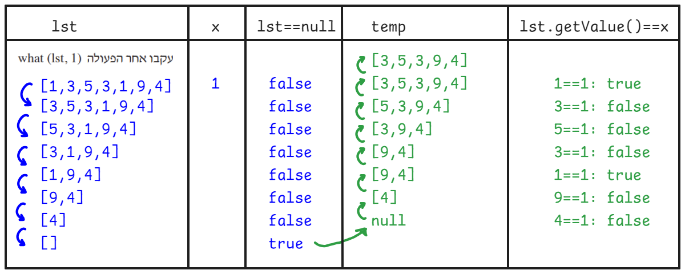
</img-areas>
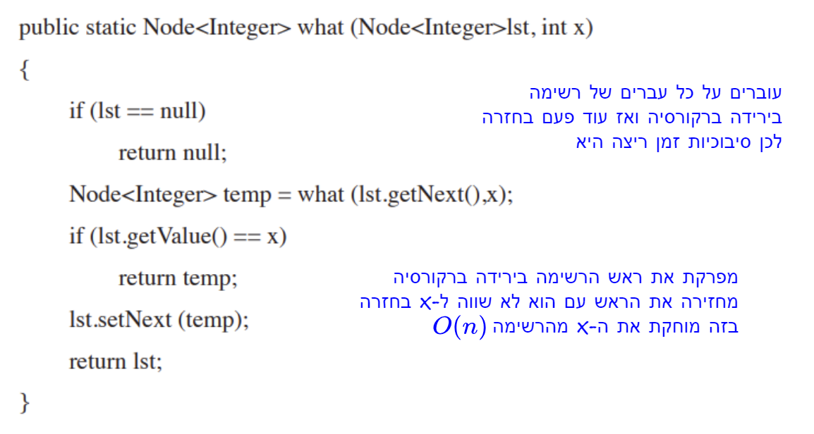
</img-areas>
</drill>

<!---------------------------------------------------------->

<drill lang="java" id="">
<drill lang="java" id="q-3-b" as-html>
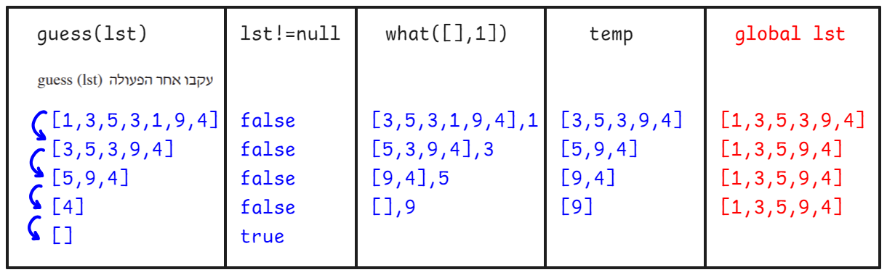
</img-areas>
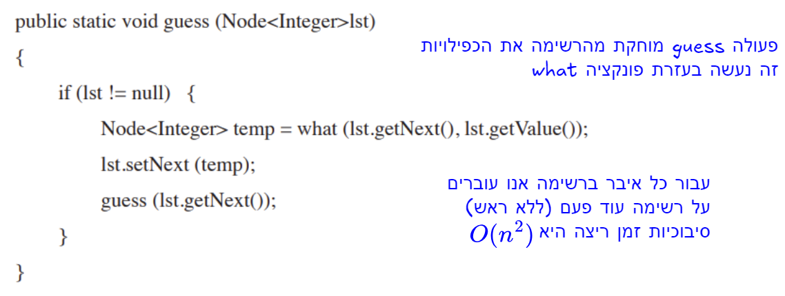
</img-areas>
</drill>

<!---------------------------------------------------------->

<drill lang="java" id="BusStation">
$!html 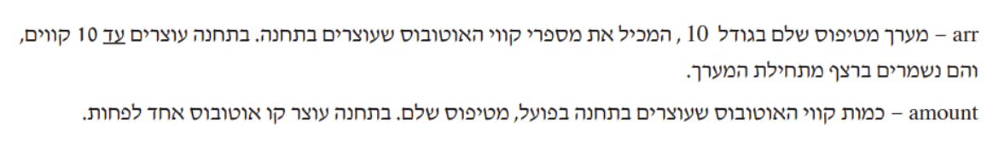
class BusStation {
    $private$ int num;
        ^public ~r ht access-modifier       {2}
    $private$ int[] arr;
        ^public ~r ht access-modifier       {2}
    $private$ int amount;
        ^public ~r ht access-modifier       {2}

    $public$ int[] getArr() { return this.arr; }
        ^private ~r ht access-modifier       {3}
    $public$ int getAmount() { return this.amount; }
        ^private ~r ht access-modifier       {3}

    $!html 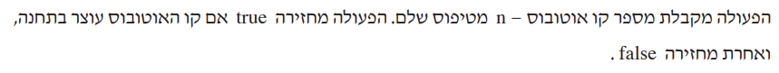
    public $$boolean isStopping($int $$n$) {
            ^static $ ~r ht internal-func
            ^$ ~t                                   {+}
            ~r ht type-is-missing
        for (int i = 0; i < this.$amount$; i++) {
                ^arr.length ~r ht wrong-logic
            if $($$arr[i] == n$$)$ {
                    ^$
                    ~r ht if-syntax
                    ^$
                return true$;$                  {1}
                    ^  $ ~r ht comma-is-missing
            }
        }
        return false$;$                         {1}
            ^  $ ~r ht comma-is-missing
    }
}
</drill>

<!---------------------------------------------------------->

<drill lang="java" id="allStations-result">
$!html 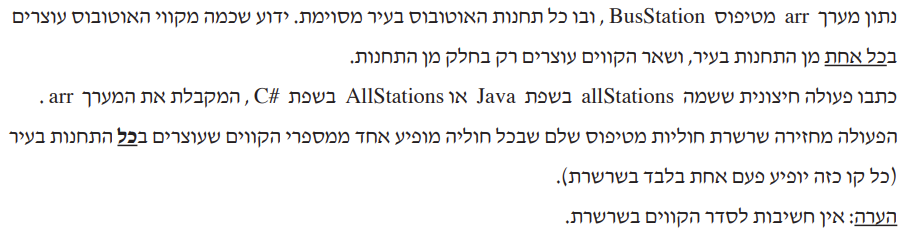
var city = new BusStation[] {
    new BusStation(1, new int[] {10, 20, 30}),
    new BusStation(2, new int[] {10, 30, 40}),
    new BusStation(3, new int[] {10, 20, 30}),
    new BusStation(4, new int[] {10, 20, 30, 40}),
};

print(allStations(city));   // $[30, 10]$
    ^? ~g ht result

public static $boolean $$inCity$(BusStation[] arr, int n) {
        ^$
        ~r ht missing-ret-type
    for ($BusStation $$bs$: arr) {
            ^$
            ~r ht type-is-missing
        for ($int $$i $= 0; i < bs.$getAmount()$; i++) {
                ^$
                ~r ht type-is-missing
                ^amount ~r ht member-access     {+}
            if (bs.$getArr()$[i] == n) {
                    ^arr ~r ht member-access     {+}
                return $true$;                  {1}
                    ^false ~r ht wrong-logic
            }
        }
    }
    return $false$;                             {1}
        ^true ~r ht wrong-logic
}
</drill>

<!---------------------------------------------------------->

<drill lang="java" id="contains()+" no-wrong-phase>
var city = new BusStation[] {
    new BusStation(1, new int[] {10, 20, 30}),
    new BusStation(2, new int[] {10, 30, 40}),
    new BusStation(3, new int[] {10, 20, 30}),
    new BusStation(4, new int[] {10, 20, 30, 40}),
};

-// <bdo dir="rtl">בודקת האם קו עוצר בכל התחנות בעיר</bdo>     {1}
public static boolean $stopsEverywhere$(BusStation[] arr, int n) {
        ~g ht its-a-helper      {1}
    for (BusStation bs: arr) {
        if ($!bs.isStopping(n)$) {
                ^... ~o ht implement
            return false;
        }
    }
    return true;
}

-// <bdo dir="rtl">בודקת האם איבר בתוך הרשימה</bdo>     {2}
public static boolean $contains$(Node&lt;Integer> lst, int n) {
        ~g ht its-a-helper      {2}
    while (lst != null) {
        if ($lst.getValue() == n$) {
                ^... ~o ht implement
            return true;
        }
-        lst = lst.getNext();               {3}
+       $...$                               {3}
            ~o ht implement
    }
    return false;
}
</drill>

<!---------------------------------------------------------->

<drill lang="java" id="allStations()" no-wrong-phase>
var city = new BusStation[] {
    new BusStation(1, new int[] {10, 20, 30}),
    new BusStation(2, new int[] {10, 30, 40}),
    new BusStation(3, new int[] {10, 20, 30}),
    new BusStation(4, new int[] {10, 20, 30, 40}),
};

public static boolean contains(Node<Integer> lst, int n) {
    ...
}

public static boolean stopsEverywhere(BusStation[] arr, int n) {
    ...
}

public static Node<Integer> allStations(BusStation[] arr) {
    Node<Integer> lst = $null;$
        ^... ~o ht implement
    for ($BusStation bs: arr$) {
            ^... ~o ht implement
        for (int i = 0; i < $bs.getAmount()$; i++) {
                ^... ~o ht implement
            int n = $bs.getArr()[i];$
                ^... ~o ht implement
            if ($stopsEverywhere(arr, n)$ $&&$ $!contains(lst, n)$) {
                    ^... ~o ht implement
                    ^... ~o ht implement        {+}        
                    ^... ~o ht implement        {+}
                lst = $new Node&lt;Integer>(n, lst);$
                    ^... ~o ht implement
            }
        }
    }
    return $lst;$
        ^... ~o ht implement
}
</drill>

<!---------------------------------------------------------->

<drill lang="java" id="longest()" no-wrong-phase>
$!html 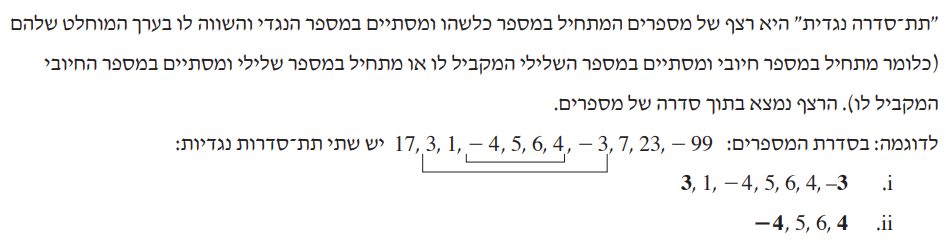
$!html 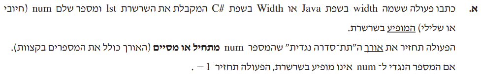<br>
public static int width(Node<Integer> lst, int num) {
    return Math.max(
        width(lst, -num, num),
        width(lst, num, -num));
}
$!html 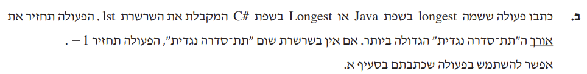<br>
public static int longest(Node<Integer> lst) {
    $Node$$&lt;Integer>$ $node$ = $lst;$
        ~r ht generic-type
        ^$
        ~g ht why-not-lst           {+}
        ^... ~o ht implement        {+}
    int max = $-1;$
        ^... ~o ht implement        {+}
    while ($node != null$) {
            ^... ~o ht implement        {+}
        max = Math.max(max, $width(lst, node.getValue())$);
            ^... ~o ht implement        {+}
        node = $node.getNext();$
            ^... ~o ht implement        {+}
    }
    return $max;$
        ^... ~o ht implement        {+}
}
</drill>

<!---------------------------------------------------------->

<drill lang="java" id="width()" no-wrong-phase>
$!html <br>
public static int width(Node&lt;Integer> lst, int left, int right) {
    int first = $-1;$
        ^... ~o ht implement
    int last = $-1;$
        ^... ~o ht implement
    int i = $0;$
        ^... ~o ht implement
    while (lst != null) {
        if ($lst.getValue() == left$ && $first == -1$) {
                ^... ~o ht implement
                ^... ~o ht implement        {+}
            first = $i;$
                ^... ~o ht implement
        }
        if ($lst.getValue() == right$) {
                ^... ~o ht implement
            last = $i;$
                ^... ~o ht implement
        }
        lst = lst.getNext();
        i++;
    }

    if (first == -1 || $last == -1$ || $first > last$) {
            ^... ~o ht implement
            ^... ~o ht implement        {+}
        return -1;
    }
    return $last - first + 1;$
        ^... ~o ht implement
}
</drill>

<!---------------------------------------------------------->

<drill lang="java" id="q-9-a" no-wrong-phase>
אם `L_1` ו-`L_2` אינן רגולריות
אז `L_1 nn L_2` בהכרח אינה רגולרית
$לא נכון$
    ^? ~g ~m hr is-it-right

-`L_1 = \{a^n b^n\}`            {1}
-`L_2 = bar L_1`                {1}
-`L_1 nn L_2 = ∅`               {1}

$!html <hr>

`L_1^n \cdot L_2^n \Leftrightarrow (L_1 \cdot L_2)^n`

-`L^n = \underbrace{L \cdot L \cdots L}_{n\text{ times}}`

$לא נכון$
    ^? ~g ~m hr is-it-right

-`L_1 = \{a\} \Rightarrow L_1^2 = \{a^{}a\}`        {2}
-`L_1 = \{b\} \Rightarrow L_1^2 = \{b^{}b\}`        {2}
-`L_1 \cdot L_2 = \{a^{}b\}`                        {2}

-`L_1^2 \cdot L_2^2 = {a^{}a^{}b^{}b}`               {3}
-`(L_1 \cdot L_2)^2 = {a^{}b^{}a^{}b}`               {3}
</drill>

<!---------------------------------------------------------->

<drill lang="java" id="q-10-b" as-html>
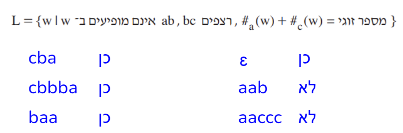
</img-areas>
</drill>

<!---------------------------------------------------------->

<drill lang="java" id="">
</drill>

<!---------------------------------------------------------->

<drill lang="java" id="">
</drill>

</template>